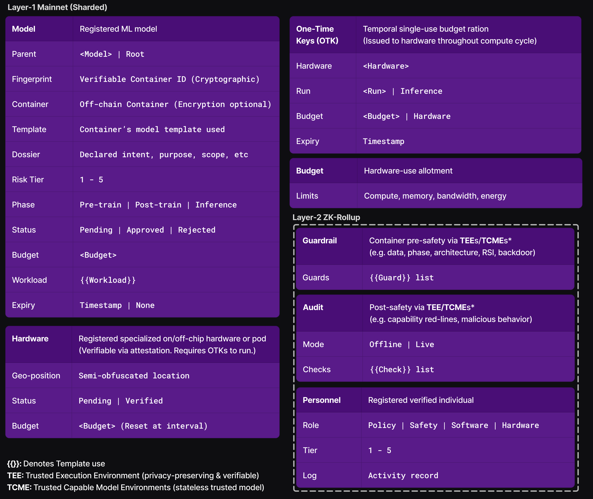

International Hybrid-Technical AI Governance DAO
A foundational framework for responsible AI development

An actionable international AI governance solution utilizing blockchain, collaborative
verifiable safety, and automated technical enforcement with human-in-the-loop orchestration.
An open-source blockchain-based Decentralized Autonomous Organization (DAO) multilaterally developed
and operated - enforced by nation states, adopted by the AI industry and integrated
in to AI-compute datacenters.
Enabling global coordination between policy makers, safety experts and industry with tiered voting,
enabling dynamic adaptability and control in an evolving technical landscape.
Setting red-lines to the race towards Artificial General Intelligence (AGI) while preventing
critical AI risk.
Building on existing research in AI governance, technical governance, compute governance, verifiable
safety, specialized compute hardware (on/off chip), Trusted
Execution Environments (TEEs) & Trusted
Capable Model Environments (TCMEs).
Mission Statement
Problems & Solutions
Problems
AI safety is a global issue and priority.
Establishing AI Governance is fraught with:
- Poor coordination across domains and stakeholders.
- Geopolitical tensions and strategic vulnerabilities.
- Difficulty in handling decentralized compute.
- Overregulation that stifles innovation.
- Delays in oversight and enforcement.
Solutions
Genuine coordination arises out of mutual need.- International: Levels the playing field, setting race rules to the of benefit all stakeholders.
- Hybrid-Technical: Combines human oversight with robust automated compliance.
- Blockchain DAO Offers universal, transparent, collaborative oversight with implicit due diligence, making it adversarial-hardened, verifiable and adaptable. Alleviates the burden of trust.
A strong solution necessitates multilateral government participation on AI-compute datacenters and specialized hardware. If it is to be accepted by adversarial nations or organizations, the solution cannot be sovereign, centralized or forced.
This solution is not intended to replace existing governance rather to augment it. It provides the foundational layer allowing individual nations and organizations to build on top for further AI governance, policy and safety.
Market Incentives
Participation grants access to otherwise restricted datacenters and state-of-the-art safety tools. Standardization is cost-effective with less compliance overhead. It grants "certified trust" for AI models, reducing market stifling.
Key Features
Foundational Outer Alignment: Ensures AI systems align with globally agreed-upon safety foundations.
Compliance Enforcement: Automated mechanisms to enforce rules without constant human intervention.
Compute Governance: Decentralized handling of compute resources. Hardware verification and management (on/off-chip). Voted on compute budgets.
Training Run Governance: Restrictions on training data domains (e.g. dangerous knowledge domains). Adherence to standardized AI model architectures, mitigating loss-of-control risk.
Standardized Safety: Verifiable evaluations and benchmark audits. Templates for safeguards, audits & model architectures allow modular collaborative AI safety research.
Model Registry: Human approval via voting met with automated technical safety. Privacy-preserving with verifiable cryptographic identity.
Personnel Registry: Registered and vetted personnel across policy, safety, software & hardware. Includes a whistle-blower program for reporting issues.
Activity Logging: Logs all system actions & events for transparent accountability.
Incentivized Adoption: Permitting otherwise restricted access to AI-compute datacenters, cost-effective safety infrastructure, reduced regulatory stifling and certified trust for AI models.
Multilateral Voting: The framework provides the structure for modular collaborative safety through which multilateral voting establishes the safety standard. Tiered policy and safety personnel with distributed seats vote on model registry, modular template designs, and the selection of safeguards and audits.
Open-Source Transparency & Verifiable Trust: All components are auditable, adaptable and adversarial-hardened.
Limitations
- Time, this solution assume longer timelines to reaching AGI.
- Political will and recognition of the imminent need for collaborative international AI
governance.
Nations therefore must become aware of critical AI risk and realize an AI weapons race benefits none. - Not designed for AGI or superintelligence;
focuses on pre-AGI preventative red
lines.
Enduring governance of AGI or superintelligence is a fundamental problem in AI safety research. Leading AI scientists hold that it requires superalignment, a concept currently unsolved and possibly unsolvable given the timeline set forth by AI race. - Relies on specialized hardware development and cryptographic security.
There is strong and growing research for the design of specialized hardware with some real-world implementation, however further development is needed. It is the ambition of this framework to enact global coordination and the will to accomplish this.
As frontier models grow in capability, so does their threat to cryptographic security, escalating the need of critical supervision and ongoing reinforcement. This system's many security layers reduce threat impact though it remains an active concern. - Limited insight into private model architectures.
Model templates, safeguards and audits reduce, yet do not eliminate, risks from dangerous model architectures. - Off-system training remains possible, though heavily hindered by global mandates on datacenters. Frontier AI advancements could produce model architectures that require minimal compute for training, running on standard hardware.
- Does not fully govern model inference.
While inference at participating AI-compute datacenters can only happen with approved, certified models, governance of inference input/output is beyond the scope of the system. On-chain system safeguards for inference input/output could be created, though the framework itself lacks ability to enforce it.
Inference require fast and low-latency processing at scale, which conflicts with the slower and resource-intensive nature of blockchain. Neither does inference necessitate AI-compute hardware, with current frontier open-weight models already runnable on edge devices - a trend likely to hold as AI models and hardware continues to advance.
Technical Details
System Architecture
Layered blockchain structure:
Layer-1 Mainnet controls core
components which are sharded
accordingly.
Layer-2 ZK-Rollups are employed
for less dynamic components to reduce
mainnet load.
Layer-3 dApps provide user
interfaces.

Templates for AI model architectures, workloads, safeguards and audits provide standardized protocols and better collaborative safety work. Critically important for Model architecture and Workloads to enforce safe training paradigms, for mitigation of risks such as backdoors, recursive self-improvement (RSI) and loss-of-control.
Blockchain Layer-2 ZK-Rollups handles authoring and voting of audits, safeguards and templates that change less frequently, avoiding overload on Layer-1. Once voted on, these become immutable on Layer-1 for active integration. They can be removed/replaced only through voting, ensuring adaptability while maintaining security and trust. As security is paramount, interactive zero-knowledge proofs are used over faster non-interactive zero-knowledge proof (NIZK).
System Flow
The framework serves to establish a safety standard, which consists of voted-upon standardized safety modules developed by the global community. An AI model attains certification after it has successfully passed the safety standard. Certified models must be renewed periodically, if it is requested via voting, and after any updates to the safety standard.

The system flow governs models with
human-in-the-loop review,
pre-safety (safeguards) and
post-safety (audits).
The system covers inference to a limited degree, essentially serving as model certification. This
is due to inherent limitations in inference governance, as inference is less hardware restricted.

- Initial Model Registration:
Models are registered with a 'Pending' status in which it must pass voting, where tiers/budgets are also assigned, before attaining 'Approved' status.
A model can be registered at any phase, which allows pre-existing models (or open-weights) to be onboarded. Onboarding an inference-ready model must undergo post-safety. - TEE-Deployed Container:
After passing pre-safety (safeguards), a training model and container are loaded into a TEE for privacy-preserving execution of a workload, which are securely decrypted by model authors at runtime.
During execution the container is sealed & air-gapped (no network or human interaction). Once a Workload completes, Runs are assembled and a new 'Pending' inference model is registered.
- Workload Run cycle:
A workload consists of multiple runs conducted by the container, with each run specifying hardware for compute. Each run (or run stage) depends on OTKs (Hardware requires OTKs to operate) tied to compute budgets and hardware integrity.
Inference models have an alternative flow, only requiring OTKs after being certified.
- OTK Issuer:
Uses near real-time hardware and model budgets for compute governance. OTKs are cryptographically generated on-chain, tied to a specific run, workload, model, and specific registered hardware, with expiry.
Semi-random OTK "drip" issues keys incrementally during the run, mitigating theft, reuse or decentralized compute gaming.
The OTK "drip" overcomes blockchain latency issues by issuing budget rations, potentially queuing an addition OTK to prevent interruption, never surpassing a run's (or hardware's) allotted budget. Budgets are managed on-chain, updated throughout a run. The OTK Issuer halts the OTK "drip" on failed hardware integrity attestations.
Inference models are issued OTKs at less frequent increments with higher budget rations, tied to the underlying hardware. - Phase Detection:
Hardware enforces a model (or run stage) phase to prevent phase gaming (e.g. Inference used for unapproved training). This is mitigated via model and workload templates, in addition to safeguards.
Phase detection is identified by differences in the requirements for workload runs and hardware usage (data, compute, memory, energy, duration, output).
See appendix for phase detection specifics.
- Hardware Verification:
Registered on/off-chip specialized hardware (with approved budgets for compute, memory, etc.) must be physically verified, inspections are carried out via authorized registered personnel (or a group of adversarial personnel when requested), on a periodic basis.
Integrity attestations run semi-randomly during a run to detect tampering (e.g. BIOS modifications, physical seal breach, relocation, anomalies, etc). This makes gaming difficult by unpredictability and reduces on-chain load.
In the event of numerous failed hardware integrity attestations, the hardware is revoked. Revoked hardware re-acquires the status 'Pending' which initiates a physical inspection. - Audits and Safeguards:
Both are run inside privacy-preserving TEEs or TCMEs and produce reports without disclosing intellectual property details. Audits verify safety via evaluations and benchmarks. Safeguards mitigate unauthorized data domains and architectures, as well as backdoors and RSI detection. Depending on the severity level of a failed safeguard, a workload may be cancelled.
The required system audits and safeguards are selected and approved via voting to establish the safety standard, with different sets enabled depending on the model template used. - Post-Workload:
When a workload completes, a new 'Pending' Inference model is created then subsequently run through multiple audits (post-safety). Audits with no scaffolding are run first, followed by 'live' audits with full scaffolding (web calls, tooling, etc).
If approved, the model container (post-workload output) is transferred to off-chain storage (managed by model authors), and can be used for inference.
Failing models are assigned a status of 'Rejected' and voted on to determine whether a model is permitted to undergo another attempt. If permitted, a new post-train model is registered with restrictive templates.
These restrictive templates enable post-training with proxy access to the failed model output, which is temporarily stored in a secure vault only accessible by the system - this prevents exposure even to the model authors. - Inference at AI-compute datacenters:
Inference only requires OTKs, reliant on a certified inference model. This is the extent by which the system directly governs inference. Verification of certified inference models with the cryptographic Container ID (fingerprint) is openly available, allowing verification by regular datacenters, edge devices and other hardware with device mating - however enforcement is out-of-scope of the system.
Multilateral Voting
Voting determines the policy and safety standards which are enforced by the system.Participation happens via a tiered structure and is restricted to registered, vetted Policy & Safety personnel.
 Types of voting:
Types of voting:
- Safety
- Selecting safety modules for the safety standard, which is a multiple-rounds process
- Approving new templates for models, audits and safeguards
- Reviews
- Approving new model training and new hardware
- Onboarding existing models
- Setting compute budgets for models and hardware
- Allowing retries for post-workload safety failures
- Reviewing revoked hardware from failed integrity attestations
- System
- Tokenomics (e.g. gas prices, gas tax and treasury award)
- Tier changes for AI models and personnel
- Emergency
- Threat escalation for lower tier reporting
- Threat response:
- Rejecting a model
- Revoking hardware
- Adding/removing safety modules
- Compute budget penalties
Funding & Blockchain Economy
The development of the system is an international endeavor.
Financial support is sourced from:
- Nation States:
Participating governments, initially superpowers, augmented by AI taxation at the discretion of each nation. - Supranational Organizations:
Entities such as the UN, or regional alliances that prioritize cross-border coordination and governance. - AI Industry:
Top industry leaders across frontier labs, infrastructure and hardware.
Blockchain Economy
Computational system activity is metered using gas tokens:
- Closed-Loop Resource Accounting
Gas tokens are not a tradable cryptocurrency (DeFi) rather internal accounting units generated and managed by the system itself. They function as a closed-loop "resource rationing" mechanism tied exclusively to system operation. - Algorithmically Defined Pricing
Gas costs are determined through algorithmic rules that can be updated via top tier policy voters. This ensures fairness, prevents volatility, and maintains economic predictability.
Gas tokens measure resource use for:
- Blockchain Operations:
- Consensus mechanism transactions
- System state updates
- Infrastructure Overheads
- Operational costs of safety mechanisms
- Hardware inspection costs
- Shared treasury funding
Model training and inference datacenter expenses (compute, electricity, cloud hosting, bandwidth) are not covered by gas tokens. Those are settled externally between datacenters and model authors.
System Token Pool for Upkeep
A system token pool is maintained multilaterally to cover operational costs, such as voting, safety module
development, and certification renewals.
Tokens are purchased for model registration, safety module development, personnel registration, hardware
registration, and nations to maintain the system token pool.
Shared Treasury for Incentivized Safety
To incentivize on-system safety research, a shared treasury is funded per-transaction (Gas tax) after an
initial supply.
For separation of concerns, an established cryptocurrency is used instead of the system's Gas tokens.
During the multi-round safety selection voting, which determines the specific safety modules used, the
treasury
awards winning modules for each round. Awards bounties are granted for the discovery of bugs and flaws in
safety modules or the underlying system itself.
Appendix
This framework is builds off existing research in AI governance.Drawing heavily on The Oxford Martin AI Governance Initiative's research, specifically Harack, 2025
The DAO framework was inspired by The SciThereum Project.
- Trusted Execution Environments (TEEs):
TEEs provide secure and privacy-preserving code execution in a sealed virtual environment. They allow the system to securely deploy model containers and run workloads. They produce reports without disclosing intellectual property details. They are utilized when running safeguards and audits on model containers and post-workload output (attestable audits).
Schnabl, 2025 - Trusted Capable Model Environments
(TCMEs):
TCMEs allow a stateless AI model to be instructed to privately verify model container and workload code to detect banned patterns and red-line violations (e.g. RSI, unapproved architecture, or dangerous algorithms). They operate within a sealed environment, outputting a verification report without disclosing intellectual property details. They are not infallible as they are limited by the trust and capabilities of the underlying model. Despite this, they may prove to be an invaluable tool to explore privacy-restricted code bases and post-Workload output.
Shumailov, 2025 - Recursive Self-Improvement (RSI)
Mitigation
Through (A) Model registration (slowing releases via voting), (B) model architecture templates (C) pre-workload safeguards (via TCMEs) and (D) compute budgets. It is important to note that total elimination of these concerns is not feasible given the development of novel architectures and algorithmic improvements. - Phase Detection:
Reliably detecting a model's Phase requires adjustments, and may even become infeasible as architectures and hardware advance.Pre-train Post-train Inference Data Used Massive, raw, unlabeled corpus (web, books, etc.) Small, curated/labeled & task/instructional data User/user scenario input Compute Very high (multi-week/month cluster jobs, huge GPU fleets) Much lower (hours to days, single/few GPUs) Very low (real-time or near real-time) Precision FP16/BF16 (float, mixed precision for gradients) Often FP16/BF16, sometimes lower (efficient tuning) FP8/INT8 (quantized for efficiency) Memory Usage Extremely high (80–141GB+ per GPU, multi-node) Moderate/high (but often single node/fewer GPUs) Low (10–20GB per GPU typical) Batch Size Large (512–4096+ for throughput) Smaller (8–128, stability/convergence focus) Small (1–32 for low latency) Latency focus Prioritizes throughput, not latency Throughput focus, latency not critical Low latency (<1s, <100ms per query) Energy Use Extremely high (100s kWh to MWh total) Much lower (1–10% of pre-training consumption) Very low (watts per query) Accelerators Full multi-GPU with NVLink, top-end GPU clusters Single/few GPUs (no or minimal NVLink) Any GPU/CPU, efficiency prioritized Workload Type Forward & backward (backprop), full parameter updates Same; may use only a subset (adapters/LoRA/PEFT) Forward pass only Duration Weeks–months (large runs) Hours–days (sometimes weeks for large/continual) Milliseconds–seconds per query Output Foundational (“base”) model, not user-ready Aligned/specialized, user-ready model Answers, completions, predictions